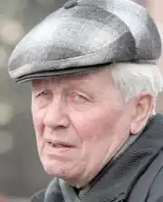

Народився Іван Іванович Чернецький 23 грудня 1935 року в селі Злоєць на Холмщині. У 1942–1943 роках родина Чернецьких зазнала гонінь від німецької окупаційної влади, а в лютому 1943 загинув батько майбутнього письменника.
У 9-річному віці Іван Чернецький помандрував аж на Херсонщину, куди було переселено сім’ю. Там, у селі Біляївка, пішов до першого класу. 1946 року на Східній Україні розпочався голод і родина переїхала на Волинь. Спочатку мешкали у с. Воротнів, згодом у с. Рованці, що поблизу Луцька.
Середню освіту Іван Чернецький здобував у Луцькій школі №1, а вищу – на історико-філологічному факультеті Луцького педагогічного інституту імені Лесі Українки, де відвідував літературну студію. Ще будучи студентом, Іван Чернецький стає помітною постаттю в літературі. Схвально про його слово відгукуються Василь Стус, Євген Сверстюк, Ігор Калинець й Іван Гнатюк, які згодом стали Шевченківськими лауреатами. По закінченні інституту поїхав за направленням у Старокозацький район на Одещині – працював вчителем історії та географії у селах Чистоводному та Підгірному. Згодом повернувся на Волинь і вчителював у селі Печихвости Горохівського району, викладав історію. 1964 року залишив педагогічну практику й перейшов на роботу у Волинський краєзнавчий музей. 1965 року просто диво вирятувало поета від ролі в’язня та диссидента: вдома у Івана Чернецького кадебісти влаштували обшук та вилучили з десяток поезій. А через декілька днів збори парторганізації управління культури за вірші "Заздрість", "До питання про культ", "Смерть персонального пенсіонера" одноголосно виключили його з лав Комуністичної партії. Згодом Іван Чернецький працював у Луцькій міській раді, обирався депутатом міської ради першого демократичного скликання, брав участь у створенні обласної організації Товариства книголюбів, яку очолював протягом 20-ти років. Перші вірші Івана Чернецького були надруковані у 1957 році на сторінках газет, у літературному альманасі "Волинь" та колективній збірці "Яблуневий цвіт". Дебютував поет збіркою "Заручини" (1969), що побачила світ у видавництві "Каменяр". Загалом у його творчому доробку до двох десятків книжок поезії та прози, з них шість – для дітей. Член Національної спілки письменників України з 1981 року. Нагороджений Почесною Грамотою Кабінету Міністрів України (2011), лауреат обласної літературно-мистецької премії імені Агатангела Кримського (2000), літературної премії "Родина Косачів" благодійного фонду "Рідна Волинь" за твори для дітей (2012), переможець VІІ Всеукраїнського фестивалю гумору, що проводиться у селі Нобель на Рівненщині (2013). Окремі твори перекладені російською, білоруською, польською мовами. Окремі видання творів: Заручини : поезії / І. Чернецький. – Львів : Каменяр, 1969. – 36 с. Двоколос : поезії / І. Чернецький. – Львів : Каменяр, 1980. – 79 с. Зірниці : поезії / І. Чернецький. – Львів : Каменяр, 1985. – 70 с. Переклик : поезії / І. Чернецький. – Київ : Радянський письменник, 1988. – 86 с. Незрозумілий цей Ілько : оповідання для дітей молодшого шк. віку / І. Чернецький. – Львів : Каменяр, 1989. – 32 с. Читаночки : для дітей дошк. і молодшого шк. віку / І. Чернецький. – Луцьк : Надстир’я, 1992. – 12 с. Що повіз автомобіль : вірші для дітей дошк. та молодшого шк. віку / І. Чернецький. – Луцьк : Надстир’я, 1996. – 20 с. Сльоза : поезії / І. Чернецький. – Луцьк : Вежа, 1997. – 64 с. Подарунок для Іванки : оповідання для дітей молодшого та середнього шк. віку / І. Чернецький. – Луцьк : Надстир’я, 2001. – 44 с. Допишу завтра… : проза / І. Чернецький. – Луцьк : Волинська обласна друкарня, 2004. – 80 с. Вечірні розмови з Сірком : гумор / І. Чернецький. – Луцьк : Твердиня, 2005. – 36 с. – (Серія "Літературний ексклюзив") Літа : поезії / І. Чернецький. – Луцьк : Надстир’я, 2005. – 244 с. Такої мами нема ні в кого : оповідання для дітей молодшого та середнього шк. віку / І. Чернецький. – Луцьк : Твердиня, 2007. – 48 с. Сліди на снігу / І. Чернецький. – Луцьк : Твердиня, 2008. – 60 с. Подорожник : поезії / І. Чернецький. – Луцьк : Волинська обласна друкарня, 2010. – 88 с. Якого кольору вітер : вірші для дітей дошк. та молодшого шк. віку / І. Чернецький. – Луцьк : Волинська обласна друкарня, 2011. – 28 с. Підготувала: Окунєва О. А. – заввідділом краєзнавчої літератури